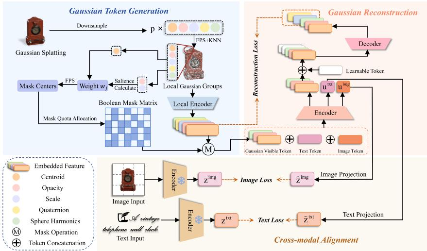

Figureure 1 · Motivation and overview of GaussFusionFig. 1. Motivation and overview of GaussFusion. Compared with basic masked Gaussian modeling, GaussFusion introduces image-text semantic alignment and GSHM masking to select salient, spatially co herent Gaussian regions, improving local structure learning and semantic transferability.这张图概括 GaussFusion 的整体方法流程。阅读时先看模块之间传递的训练信号，再看作者如何把目标拆成可优化的子问题。

Figureure 2 · Overall framework of GaussFusionFig. 2. Overall framework of GaussFusion. GaussFusion generates Gaussian tokens from 3D splats and applies Gaussian Salience-guided Multi-scale Hole Masking (GSHM) to local Gaussian groups. Visible Gaussian tokens are combined with learnable image and text tokens in a multimodal encoder. The decoder reconstructs masked Gaussian groups, while frozen image and text encoders provide cross-modal supervision for learning transferable 3D representations.这张图概括 GaussFusion 的整体方法流程。阅读时先看模块之间传递的训练信号，再看作者如何把目标拆成可优化的子问题。